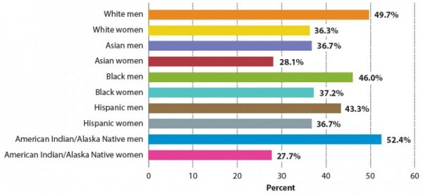

STEM employment in the United States of America has grown from a mere 9.7 million job occupations in 1990 to a striking 17.3 million in 2018, nearly doubling the STEM workforce. According to Pew Social and Demographic Trends, “Asians are overrepresented in the STEM workforce,” making up approximately 13% of this workforce. In 2018, while whites occupied a greater percentage of STEM jobs (69%), African Americans and Hispanics only occupy 9% and 7%, respectively, of STEM jobs. However, it is essential to consider this statistic with that of 1990, where whites occupied 83% of STEM jobs, Asians 6%, African Americans 7%, and Hispanics 4% (Pew Social Trends and Demographics, 2018). This overrepresentation of the Asian race in STEM jobs may not seem like much with these statistics, but when considering that Asians only make up 6% of the population, this 13% is clearly an overrepresentation of the race (Brookings University, 2020).
PERCENTAGE OF SCIENTISTS AND ENGINEERS EMPLOYED IN GOVERNMENT WHO ARE MANAGERS, BY RACE/ETHNICITY AND SEX (2006)
Source: Issues
After consider the different races, it is important to consider the different sexes within these races. For instance, in 2008, among the Science and Engineering university professors, Asian men make up more than double the percentage of Asian women with tenure, and more than three times the percentage of Asian women that are full professors. In S&E government jobs, 36.7% of Asian men occupy managerial positions, but only 28.1% of Asian women occupy managerial positions (Issues, 2011).